O problema
Necessidade de padronizar e simplificar o preenchimento do Termo de Abertura de Projeto (TAP), devido à falta de uniformidade nas informações recebidas, gera retrabalho dificultando a automatização de etapas e a manutenção atualizada do Portfólio de Projetos Estratégicos. Torna-se essencial simplificar e automatizar etapas do processo e manter o Portfólio de Projetos Estratégicos atualizado e confiável.
Atualmente, o servidor encaminha a proposta de projeto por meio de formulários preenchidos fora do padrão estabelecido, frequentemente com informações incompletas e documentos pendentes, exigindo solicitações de ajustes e complementações pela equipe antes de iniciar as etapas de análise e validação.
Retrabalho.
AS-IS · o processo antes do MVP
O caminho real, com quem faz, o que entra, onde espera e o que é automatizável. Fonte: tabela AS-IS do projeto.

Fluxograma AS-IS · amarelo: etapa manual; tracejado: ponto de espera. Os números correspondem à tabela. Fonte Mermaid.
| Etapa | Quem faz | Entra | Ação | Sai | Sistema | Regra | Onde espera | Tempo | Automatizável |
|---|---|---|---|---|---|---|---|---|---|
| Recebimento da demanda | Servidor / unidade demandante | Ideia de projeto | Encaminha a proposta de projeto | Proposta em formato livre | E-mail ou SEI | Recebimento de propostas em formatos diferentes | Não mensurado | Sim, com regra clara | |
| Preenchimento do TAP | Servidor / unidade demandante | Modelo do TAP | Preenche o formulário com informações do projeto, objetivos e alinhamento estratégico | TAP preenchido | Documento de texto | Dificuldade de compreensão e preenchimento do modelo | Não mensurado | Sim, com apoio humano | |
| Anexação de documentos | Servidor / unidade demandante | TAP | Anexa documentos obrigatórios e pesquisa de preços | Anexos | E-mail ou SEI | Documentos ausentes ou incompletos | Não mensurado | Sim, com regra clara | |
| Triagem documental | Equipe responsável | TAP e anexos | Confere o preenchimento e a documentação recebida | Lista de pendências | Planilha da equipe | Conferência manual e identificação tardia de pendências | Não mensurado | Sim, com regra clara | |
| Solicitação de ajustes | Equipe responsável e demandante | Pendências | Solicita correções e complementações no TAP e nos documentos | TAP corrigido | Retorno da proposta ao demandante e retrabalho | Não mensurado | Sim, com apoio humano | ||
| Análise técnica e estratégica | Equipe responsável | TAP completo | Verifica requisitos, alinhamento estratégico e viabilidade técnica | Parecer técnico | Documento | Informações inconsistentes podem atrasar a análise | Não mensurado | Sim, com apoio humano | |
| Aprovação e inclusão no portfólio | Instância responsável / equipe de projetos | Parecer | Formaliza a aprovação e registra o projeto no Portfólio de Projetos Estratégicos | Decisão e registro no portfólio | Planilha do portfólio | Necessidade de manter as informações atualizadas | Não mensurado | Sim, com regra clara | |
| Priorização dos projetos | Equipe responsável / governança | Portfólio | Avalia critérios, classifica os projetos e registra justificativas | Prioridades justificadas | Planilha do portfólio | Consolidação e atualização das informações | Não mensurado | Sim, com regra clara | |
| Mapeamento e submissão para captação | Equipe responsável | Projeto priorizado | Identifica fontes financeiras e submete propostas | Proposta submetida | Sistema do financiador | Dependência de editais e oportunidades disponíveis | Não mensurado | Sim, com apoio humano | |
| Avaliação da captação e readequação | Equipe responsável / financiador | Resultado da captação | Verifica a aprovação dos recursos e readequa o plano quando necessário | Projeto financiado ou readequado | Dependência do retorno do financiador e de novas oportunidades | Não mensurado | Sim, com apoio humano |
TO-BE · o processo com o MVP
O que muda em cada etapa, quem passa a fazer e o ganho esperado. Fonte: tabela TO-BE do projeto.

Fluxograma TO-BE · verde: máquina (automação local); azul: pessoa (fé pública). Fonte Mermaid.
Quando o fluxo digital estiver implantado, o demandante deixará de encaminhar propostas em formatos variados e passará a preencher um TAP padronizado, orientado e validado, enquanto a equipe receberá propostas mais completas e poderá concentrar seu trabalho na análise técnica e estratégica.
- Preencher o TAP guiado
Formulário único com instruções, campos obrigatórios e checklist
A pessoa assistida pela máquinaTAP completo no primeiro envio - Conferir antes do envio
O app aponta campos e anexos faltando antes de gerar o pacote
A máquina (automação)Menos devolução - Triagem
A equipe importa o pacote e confere pelo checklist, registrando pendências
A pessoa assistida pela máquinaPendência registrada com motivo e data - Análise técnica e estratégica
Sem mudança; o app guarda o parecer
A pessoa, sem mudançaHistórico em um só lugar - Portfólio
Aprovados entram no portfólio com status e exportação para Excel
A pessoa assistida pela máquinaPortfólio atualizado
| Etapa | O que muda | Quem faz | Benefício | Esforço |
|---|---|---|---|---|
| Preencher o TAP guiado | Formulário único com instruções, campos obrigatórios e checklist | A pessoa assistida pela máquina | TAP completo no primeiro envio | Médio |
| Conferir antes do envio | O app aponta campos e anexos faltando antes de gerar o pacote | A máquina (automação) | Menos devolução | Baixo |
| Triagem | A equipe importa o pacote e confere pelo checklist, registrando pendências | A pessoa assistida pela máquina | Pendência registrada com motivo e data | Baixo |
| Análise técnica e estratégica | Sem mudança; o app guarda o parecer | A pessoa, sem mudança | Histórico em um só lugar | Baixo |
| Portfólio | Aprovados entram no portfólio com status e exportação para Excel | A pessoa assistida pela máquina | Portfólio atualizado | Médio |
O que o MVP entrega
Tela-assinatura: Matriz do portfólio (valor × prioridade).
Menu do MVP: Novo TAPMinhas propostasTriagemPortfólioIndicadoresConfiguração
Regras de negócio
| ID | Regra | Quando | Tipo | Exceção |
|---|---|---|---|---|
RN01 | Campos obrigatórios do TAP preenchidos (título, unidade, responsável, objetivo, justificativa, objetivo estratégico, valor e prazo) | Antes de gerar o pacote | Validação | Nenhuma |
RN02 | Justificativa e objetivo com tamanho mínimo (proposta: 200 e 100 caracteres) | Antes de gerar o pacote | Validação | Nenhuma |
RN03 | Checklist de anexos: cada documento obrigatório anexado ou justificado | Antes de gerar o pacote | Validação | Justificativa aceita pela equipe |
RN04 | Anexos até 10 MB cada, em PDF, planilha ou imagem | Ao anexar | Validação | Nenhuma |
RN05 | Pendência sempre com motivo; a proposta volta ao demandante | Na triagem | Negócio | Nenhuma |
RN06 | Proposta só segue para análise com o checklist completo | Na triagem | Negócio | Nenhuma |
RN07 | O app não aprova nem rejeita: registra a decisão da instância competente, com autor e data | Na decisão | Negócio | Nenhuma |
RN08 | Prioridade só é registrada com justificativa e critério aprovado pela governança | No portfólio | Negócio | Nenhuma |
Papéis
| Papel | Quem é | O que vê | O que faz | O que não faz | Registro |
|---|---|---|---|---|---|
| Demandante / Servidor | Servidor ou unidade que propõe o projeto | Seus projetos, formulário TAP, documentos e pendências | Cadastra a proposta, preenche o TAP, anexa documentos e realiza ajustes solicitados | Aprovar o próprio projeto ou alterar análises e decisões da equipe responsável | Envio, ajustes e respostas às pendências |
| Equipe de Projetos Estratégicos | Equipe responsável pela gestão e análise das propostas | Todas as propostas recebidas, TAPs, documentos, pendências e portfólio | Confere o preenchimento, solicita ajustes, realiza análises técnicas e estratégicas, atualiza o portfólio e acompanha a captação | Registrar aprovação de competência exclusiva de outra instância ou alterar decisões já formalizadas sem justificativa | Triagem, pendências, parecer e atualização do portfólio |
| Gestor / Autoridade aprovadora | Gestor ou instância com competência para aprovar projetos | Propostas analisadas, pareceres, prioridades e informações necessárias à decisão | Aprova, rejeita ou solicita readequações conforme sua competência | Alterar documentos ou pareceres técnicos sem manter o histórico das modificações | Decisão, data e justificativa |
| Responsável pela captação de recursos | Servidor ou equipe responsável por identificar fontes de financiamento | Projetos aprovados e priorizados, informações orçamentárias e oportunidades de captação | Identifica fontes de recursos, prepara submissões e acompanha os resultados | Submeter propostas sem os requisitos exigidos ou alterar informações validadas sem registro | Fontes, submissões e resultados |
| Administrador do sistema | Responsável pela configuração e manutenção da solução | Cadastros, perfis de acesso, parâmetros e registros técnicos | Gerencia usuários, permissões, formulários e regras de validação | Aprovar projetos apenas por possuir acesso administrativo, sem competência formal | Mudanças de configuração |
Métricas do piloto
Como testar
O MVP é um `index.html` offline, com dados fictícios. Abra index.html.
cd Apps/tap-portfolio-projetos python construir.py python testes/testar.py python testes/cenarios.py python testes/jornada.py # Lightpanda (via WSL, CDP em 9222 e HTTP em 8000) python testes/jornada.py --cdp http://127.0.0.1:9222 --base http://127.0.0.1:8000
Documentos: PROJETO.md · sprint.md · README.md